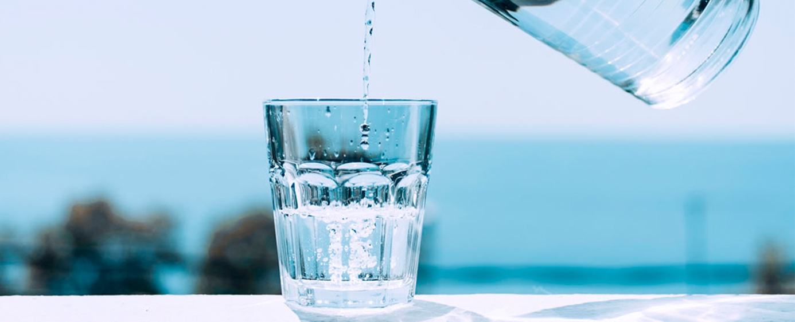
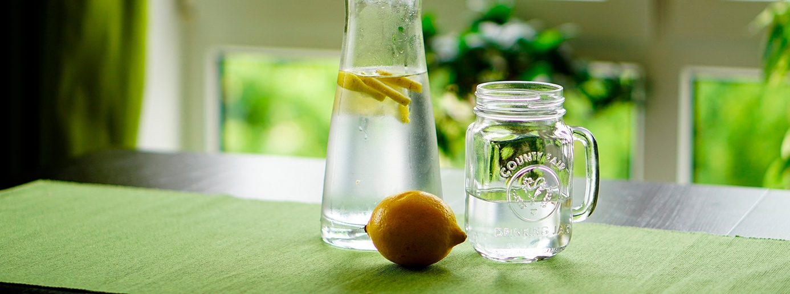

Populárne články

Vodná bilancia, význam správnej hydratácie
Voda je nevyhnutná pre život a udržiavanie hydratácie je dôležité pre fyzický aj duševný výkon. Ľudské telo je z veľkej časti tvorené vodou. Obsah vody v tele s vekom klesá – od približne 75 % u dojčiat až po 60 % u dospelých. Hoci bez jedla dokážeme prežiť až 50 dní, bez vody prežijeme len niekoľko dní, a to aj v chladnom podnebí. Ľudia zvyčajne pijú dostatok vody, no pre určité skupiny obyvateľstva, napríklad pre starších ľudí, alebo počas cvičenia, sa môže príjem tekutín stať kritickým faktorom.

Denné straty vody
Voda z nášho tela neustále uniká cez pokožku a pri dýchaní, pričom ide o približne 700 ml denne. Ďalších 100 ml strácame stolicou, približne 1,5 litra močom a 200 ml bežným potením. Aj pri bežnom živote a dýchaní v miernom klimatickom pásme je teda potrebný príjem približne 2,5 litra tekutín denne. Fyzická aktivita a zvýšená teplota prostredia vedú k intenzívnejšiemu poteniu, väčším stratám vody, a tým aj k vyššej potrebe tekutín. Výrazne vyššie straty vody nastávajú aj počas choroby či hnačky.
Účinky dehydratácie. Dehydratácia môže spôsobiť bolesti hlavy, únavu a stratu sústredenia. Tento problém súvisí najmä so starnutím, keďže starší ľudia sú menej citliví na miernu dehydratáciu, pijú menej tekutín a ich rehydratácia trvá dlhšie. K zhoršeniu mentálnej výkonnosti
môže dôjsť aj u mladších dospelých, ktorí sú mierne dehydratovaní. Deti strácajú viac vody potením, keď sa ich telo snaží ochladiť, preto je dôležité
dbať na to, aby v horúcom počasí pili dostatok tekutín.
Prijímanie dostatočného množstva tekutín na udržanie hydratácie. Mali by sme vypiť toľko, aby sme vykompenzovali straty vody. Metabolické procesy v našom tele vytvárajú
približne 250 ml a ďalších 750 ml získavame zo stravy. Zostáva teda 1,5 litra, ktorý musíme prijať vo forme nápojov. K celkovému množstvu potrebnému na hydratáciu môžu prispieť všetky nápoje obsahujúce vodu – vrátane ovocných štiav, nealkoholických nápojov, čaju, kávy, slabších alkoholických nápojov (napríklad piva) či samotnej čistej vody. Ukázalo sa, že keď je potreba tekutín vysoká, dôležitú úlohu zohráva aj to, či nám nápoj chutí. Štúdie tiež preukázali, že kofeín v množstve, ktoré sa bežne nachádza v šálke kávy, čaju alebo v kolovom nápoji, nemá dehydratačné účinky. Odborníci sa preto zhodujú, že bežné nápoje s obsahom kofeínu môžu prispieť k celkovému dennému príjmu tekutín. Naopak, nápoje s obsahom alkoholu 10 % a viac – napríklad väčšina druhov vína – vedú k čistým stratám tekutín z organizmu.
Čo sa deje, keď cvičíme v horúcom podnebí?
Počas cvičenia sa naše telo ochladzuje odparovaním tekutiny z pokožky vo forme potu, preto musíme prijímať viac tekutín, aby sme predišli dehydratácii. V chladnom alebo miernom podnebí mladí ľudia často dokážu zniesť stratu telesnej hmotnosti vo forme vody v objeme 2 % bez toho, aby utrpela ich fyzická výkonnosť; v horúcom prostredí však takáto strata tekutín výkonnosť zhoršuje a môže viesť k zdravotným problémom spôsobeným teplom. Strata presahujúca 5 % telesnej hmotnosti môže znížiť pracovnú kapacitu približne o 30 %. Viaceré štúdie preukázali, že udržiavanie hydratácie pred vytrvalostným cvičením a počas neho účinne zlepšuje výkonnosť v rôznych podmienkach.
Soľ stimuluje vstrebávanie vody a napomáha jej zadržiavaniu počas cvičenia a po ňom.
Pridanie sodíka (soli) do nápojov stimuluje vstrebávanie sacharidov, čo zvyšuje príjem vody. Doplnenie soli stratenej potom pomáha udržiavať objem krvi. Ak sa počas a po vytrvalostnom cvičení v horúčave vypije veľké množstvo samotnej vody, môže dôjsť k zriedeniu telesných tekutín čo vedie k veľkým stratám vody močom. To znamená, že hydratácia sa neudrží a nízke hladiny sodíka môžu spôsobiť kŕče z tepla a vyčerpanie. Aby sa tomu predišlo, nápoje by mali obsahovať sodík (ako športové nápoje, ktoré obsahujú množstvá podobné ako ľudské telesné tekutiny), alebo by sa voda mala piť s jedlom.
Cesta k lepšej pohode
Mali by ste denne piť vodu. Väčšina ľudí sa už stretla s odporúčaním, že by mali denne vypiť 6 až 8 pohárov vody (každý s objemom približne 240 ml). Je to rozumný cieľ. Rôzni ľudia však na udržanie hydratácie potrebujú rôzne množstvo vody. Väčšina zdravých ľudí si dokáže udržať dostatočnú hydratáciu tým, že pije vodu a iné tekutiny vždy, keď pocíti smäd. Niektorým ľuďom môže stačiť menej ako 8 pohárov, zatiaľ čo iní ich môžu denne potrebovať viac než 8. Ak máte obavy, že nepijete dostatok vody, skontrolujte svoj moč. Ak je zvyčajne bezfarebný alebo svetložltý, ste dostatočne hydratovaní. Ak má však tmavožltú alebo jantárovú farbu, môžete byť dehydrovaní.
Voda je na udržanie hydratácie najlepšia. K hydratácii však môžu prispieť aj iné nápoje a potraviny. Niektoré z nich však môžu do vášho jedálnička pridať kalórie navyše vo forme cukru. Ovocné a zeleninové šťavy, mlieko či bylinkové čaje zvyšujú celkové množstvo vody, ktoré denne prijmete. K dennému príjmu tekutín môžu prispieť aj nápoje s obsahom kofeínu (napríklad káva, čaj či sladené sýtené nápoje). Pre väčšinu ľudí nie je mierne množstvo kofeínu (200 až 300 miligramov) škodlivé. Toto množstvo zodpovedá približne 2 až 4 šálkam kávy (s objemom 8 uncí, čo je asi 240 ml). Napriek tomu je vhodné konzumáciu nápojov s obsahom kofeínu obmedziť. U niektorých ľudí môže kofeín spôsobiť častejšie močenie, prípadne pocity úzkosti či nervozity.
Vodu možno nájsť aj v ovocí a zelenine (napríklad v melóne, paradajkách a šaláte) a v polievkových vývaroch.
Športové nápoje môžu byť užitočné, ak plánujete vykonávať fyzickú aktivitu s vyššou než bežnou intenzitou po dobu dlhšiu ako hodinu. Obsahujú sacharidy a elektrolyty, ktoré môžu zvýšiť vašu energiu a pomáhajú telu vstrebávať vodu. Niektoré športové nápoje však majú vysoký obsah kalórií pochádzajúcich z pridaného cukru. Môžu tiež obsahovať veľké množstvo sodíka (soli). Skontrolujte si na etikete veľkosť jednej porcie; jedna fľaša zvyčajne obsahuje viac než jednu porciu. Niektoré športové nápoje obsahujú aj kofeín. Pamätajte, že bezpečné denné množstvo kofeínu sa pohybuje v rozmedzí 200 až 300 mg (miligramov).
Energetické nápoje nie sú to isté čo športové nápoje. Energetické nápoje zvyčajne obsahujú veľké množstvo kofeínu. Okrem toho obsahujú zložky, ktoré organizmus nadmerne stimulujú (guarana, ženšen alebo taurín). Sú to látky, ktoré telo nepotrebuje. Väčšina týchto nápojov má tiež vysoký obsah pridaného cukru. Podľa lekárov by deti a dospievajúci nemali konzumovať energetické nápoje.
Ak je pre vás ťažké dodržiavať pitný režim, tu je niekoľko tipov, ktoré vám môžu pomôcť:
- - Majte počas dňa pri sebe fľašu s vodou. Aby ste ušetrili, noste so sebou opakovane použiteľnú fľašu a napĺňajte ju vodou z vodovodu.
- - Ak vám nechutí čistá voda, skúste si do nápoja pridať plátok citróna alebo limetky.
- - Pite vodu pred tréningom, počas neho aj po ňom.
- - Keď pociťujete hlad, napite sa vody. Smäd sa často zamieňa s hladom. Skutočný hlad však pitím vody nezaženiete. Pitie vody môže byť tiež prínosom pri zdravom chudnutí. Niektoré výskumy naznačujú, že voda vám môže pomôcť navodiť pocit sýtosti.
- - Ak máte problém spomenúť si na pitie vody, pite podľa rozvrhu. Vodu pite napríklad hneď po prebudení, počas raňajok, obeda a večere, a tiež pred spaním. Prípadne si dajte malý pohár vody na začiatku každej hodiny.
- - Keď idete do reštaurácie, pite vodu. Udrží vás hydratovaných a je zadarmo.
Nečakajte, kým spozorujete príznaky dehydratácie, a začnite konať skôr. Dehydratácii aktívne predchádzajte tým, že budete piť dostatok vody. Niektorí ľudia sú vystavení vyššiemu riziku dehydratácie – patria sem napríklad tí, ktorí príliš dlho vykonávajú intenzívnu fyzickú aktivitu (alebo cvičia v horúcom počasí), trpia určitými zdravotnými ťažkosťami (obličkové kamene, infekcia močového mechúra), sú chorí (horúčka, vracanie, hnačka), sú tehotné alebo dojčia, snažia sa schudnúť, prípadne počas dňa nemajú možnosť prijať dostatok tekutín. Vyššiemu riziku sú vystavení aj starší ľudia. S pribúdajúcim vekom totiž mozog nemusí byť schopný dehydratáciu rozpoznať – nevysiela signály, ktoré by vyvolali pocit smädu.
Voda tvorí viac ako polovicu vašej telesnej hmotnosti. Vodu strácate každý deň pri návšteve toalety, potením, a dokonca aj dýchaním. K rýchlejšej strate vody dochádza počas veľmi horúceho počasia, pri fyzickej aktivite alebo v prípade horúčky. K prudkej strate vody môže viesť aj vracanie či hnačka. Ak stratenú vodu nedoplníte, môže dôjsť k dehydratácii.

Ako odmerať veľkosť porcií
pomocou rúk
Prečítať článok

Stručný sprievodca intuitívnym
stravovaním
Prečítať článok

Ako kúpiť to najlepšie
Nohavice na jogu
Prečítať článok

Tipy na zdravé stravovanie
s obmedzeným rozpočtom
Prečítať článok

Ako byť viac
Disciplinovaný
Prečítať článok

5 wellness trendov, ktoré si zamilujete
Uvidíme sa v roku 2019
Prečítať článok

Kokosový olej na vlasy, ktoré
Žiari
Prečítať článok